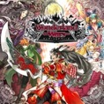

作者：车奶
正文总计13000+字，阅读时间预计30分钟。电脑阅读有右边栏toc目录，体验更佳。
前言
随着舞萌DX在大陆的铺货，越来越多人接触到了这个形似洗衣机的街机音游，其中不乏想要享受游戏却又摸不清门道的玩家。而很多时候，经验的交接还停留在口传心授的方式。所以我想整理一篇系统的、面向新手的教程。
教程第1版在2020年11月便已完成并进行了几次修订，两年过后我惊讶的发现，每时每刻依然还有不少入坑的新面孔站在机台前，充满着新鲜感。同时这两我积累的知识也更新了，发觉之前的教程还有不少可以改良的地方，于是顿感重新修订的重要性。
在实际情况中，很多人都是将星星配置与纯键配置分开练习，复合谱面则用来强化巩固二者，这样确实有所裨益；因我也是将星星篇与键位篇分开单列。
星星篇的配置在练习顺序上前后相扣，实验显示带新人效果较好，算我在教学方法上的一个小创新，欢迎各位参考。键位篇的配置则仅是罗列，供玩家卡关的时候自行查阅练习，没有顺序的要求。 我未评测7级之前的谱面，7～9级主要评测了GreeN PLUS代之后的谱面，9+～12级的所有谱面基本评测完毕。推荐谱面不代表这个配置仅有这个难度区间的这些谱面，而我综合考虑了适合练这个配置的阶段、配置在谱面中的占比、谱面中其他配置的难度、歌曲悦耳程度之后进行的筛选。
由我水平有限，所以可能对谱面的构成没有更深层次的理解，若出现错误或者遗漏，还望各位批评指正。
特别感谢教程编写过程中帮我进行瓶颈调研、课题反馈、文章校对的各位朋友，尤其感谢SniperPigeon的审稿意见以及对“延伸阅读”一章的撰写。
-
2020-11-24 初版完成于哈尔滨 暴雪初停
-
2020-12-2 改动了一些歌曲，加入手元链接
-
2021-6-13 将歌曲分类和等级更新至与国服舞萌DX2021一致，优化了歌曲列表的美工
-
2021-7-18 更新手元链接
-
2022-11-16 大幅修订，修改、删减、增添了许多内容
-
2024-2-28 将教程从bilibili专栏迁移至车奶研究室
准备
前置知识
BPM
Beat Per Minute，即每分钟的节拍数，用来表征一段音乐的快慢。
四分音符
乐理中为了方便记谱，设定了一系列具有相对时间关系的音符。四分音符时间为全音符的四分之一。顾名思义，八分音符时间是四分音符的一半，二分音符则是四分音符的两倍。若音符带了一个“附点”，则表示时间乘1.5倍。1

（3）一拍：60秒除以BPM，即为这首曲子一拍的时间。作曲时，四分音符是最常被设定为一拍的音符。maimai大部分曲子开始之前会等间隔地响四下提示音，小部分曲目由于本身拍号不同，提示音数量也不同（如由削除作曲的著名上位曲7thSense就是一首7/4拍的歌，提示音将响7次），两个提示音间隔的时间即为这首曲子一拍的时间。
练习注意
站位
如果站的太靠前，你获得不了良好的视野；太靠后，手打键和划屏不能很好发力。建议你的站位能使你两只手搭在最上面两个键的时候，手肘略大于90度。
手势
个人建议除拇指外的三个手指并拢，用前两指节打键，不要太弯曲（无论朝哪个方向）。划slide时，手与屏幕的接触面积不要太小（比如只用指尖），也不要太大（比如整个手掌），建议用手掌前端。划slide时，主要调动你的小臂，大臂只是用做辅助。
下落速度
速度慢了键位密度会变大，大脑同时要处理的信息变多，容易让你觉得杂乱无章；速度快了又容易反应不过来。调速就是调一个让你既不觉得杂乱无章、又反应的过来的速度。建议用当前水平所在的难度除2，在上下浮动1的范围内调整，最低建议别低于4.5。如9级在4.5～5.5调整，13级在5.5～7.5调整。
分工
前期大部分乐谱可以用右手打1234号键（右半边），左手打5678号键（左半边）。后期也经常用到这种思路，这种思路叫“分页处理”。
星星篇
基本原理
-
星星音符分为星星头（tap）和 划条（slide）两部分。星星头和其他形状的tap的判定形式没有区别，都是等它到达判定线时击打即可。
-
星星头准备到达判定线时，屏幕上会显示从星星头的位置引出的划条（下称slide），随后星星头会沿着slide运动，引导你跟着它划slide。拍了星星头之后，并不是立刻开始划slide，而是停顿一下再划。停顿的时间为一拍。时间轴上开始划slide的时刻，称为“启动拍”。
-
slide经历的时间可以由谱师自己制定，常见有1个8分音符、1个4分音符、3个8分音符、1个2分音符、1个全音符等等，谱师会根据音乐的行进制定每一条slide经历的时间，一般来说slide的速度会贴合歌曲的情绪，在激烈段较快，在平和段、歌曲开头和结尾偏慢。
-
如果你在设置中打开了星星头旋转，正在飞向判定线的星星头的旋转角速度就指示着slide的快慢。星星头旋转越快，slide经历的时间越短，反之越长。
-
slide被划了之后会消失。只有当前面的部分被划掉，后面才能被划（跳区等进阶的判定机制暂时无需深入了解），如下图所示。
- slide被划之后的消失并不是连续的，而是一段一段的。原因在于maimai的触屏判定是基于屏幕下方不连续分布的传感器，下方有传感器的屏幕区域称为感应区。舞萌DX感应区如下图所示。
举个例子，如下图所示，左图你只要触碰了A1、B1感应区内的任意的两个点，触发了这两个感应区，slide就会直接变成右边这样：

-
slide的判定结果与过程无关。想得到完美判定，只需在星星头进入slide的最后一个判定区时把slide划完。这就可以解释为什么很多人在处理慢速slide或者贴边一圈的slide时，会先把前面的部分划掉，等星星头到了之后再触摸slide最后剩余的部分。但对于这种星星，新手前期并不需要记判定区的位置，因为只要不是特别慢的星星，手跟着星星头划就没错。
-
有种扇形的slide会从起点放出三个星星头，这个扇形的辐射区域形似Wi-Fi，所以被称为“Wi-Fi星星”。Wi-Fi星星只需要经过中央的C区与终点的三个感应区，终点的三组判定区中每组都摸到一个就算判定成功，即下图中OR连接的三组判定区2。此类星星跟随星星头速度，张大手擦拭覆盖区域即可。

基础配置及处理手法
顿一拍，然后一下子划完slide
基本原理2页内跳转是非常重要的，会伴随你整个舞萌生涯。由原理2和前置知识可知，一首歌BPM越高，则拍完星星头停顿的时间越短。
事实上，BPM高或低（停顿时间短或长）的曲子都得练，但是根据我对很多新手的实际观察，新手在打星星不够快的歌时，拍完星星头往往会直接开始划slide，无论打多少遍都无法练成有意识的停顿一拍再划。我回忆起我从7级入门到打13级的过程中所亲身经历的、观察的人和事，在此武断的下个结论：低等级的歌写慢速星星会对路人十分友好，却绝对不利于硬核向玩家的晋升。
那新手前期应该打什么样的歌呢？
设想，如果一首曲子BPM=150，谱师把曲子里大部分slide经历的时间制定为一个8分音符，则计算可知，应当拍了星星头之后停顿0.4秒（一拍）、再用0.2秒的时间划完slide，而在maimai这么大的屏幕上，0.2秒划完一条slide是要用比较快的速度的；所以打这首歌时，大部分星星音符都可以用“拍完星星头顿一拍，然后一下子划完”来处理。这样的曲子，是最利于新手练习停顿、体会到slide的节奏感的。
同时，BPM过高的歌也不适合，因为这样星星头停顿的时间就非常短了，入门不仅容易反应不过来，还容易忽视停顿的一拍,极其不利于练习。
| 配置3.2.1推荐练习曲 | |||
|---|---|---|---|
| niconico＆VOCALOID | 裏表ラバーズ | ||
| ADV 7 | |||
| niconico＆VOCALOID | 乙女解剖 | ||
| EXP 8+ | |||
| niconico＆VOCALOID | 東京リアルワールド | ||
| EXP 8 | |||
| niconico＆VOCALOID | 天火明命 | ||
| ADV 8+ | |||
在slide 的启动拍，其他键位出tap
基础谱面里极其常见的配置，这种配置中谱师也常常把slide设定的较快。有了上一个配置的基础，这就很简单了，处理方法是：如下图所示，直接在拍tap的同时，把slide一下子划完。

| 配置3.2.2推荐练习曲 | |||
|---|---|---|---|
| niconico＆VOCALOID | アマツキツネ | ||
| EXP 9 | |||
| niconico＆VOCALOID | Seyana.～何でも言うことを聞いてくれるアカネチャン～ | ||
| EXP 9 | |||
| 其他游戏 | Infantoon Fantasy | ||
| EXP 9+ | |||
| 东方Project | Club Ibuki in Break All | ||
| EXP 10 | |||
星星头和hold双押，且slide经历时间和hold相同
这种情况经常是hold结束时，slide开始划，并且经历时间较短。大部分歌曲都可这样处理：如下图所示，在hold结束时，松手，同时一下子划完slide。即将“hold松手”与“一下子划完slide”视为一种双押行为。

| 配置3.2.3推荐练习曲 | |||
|---|---|---|---|
| 舞萌 | ユビキリ | ||
| EXP 10+ | |||
连续slide
这个配置的基础是配置3.2.2页内跳转。理解之后，“连续slide”指安插在第一条slide启动拍的tap，是第二条slide的星星头；在第二条slide启动拍，又安插第三个slide的星星头，如此嵌套下去。处理方法是：如下图所示，拍打下一个星星头时，把上一个slide一下子划完，然后重复进行这个操作。不难发现，这种配置的组成是，配置3.2.2、配置3.2.2、配置3.2.2…
在前期的常规谱中，有两种常见连续slide型：
两条slide从相隔较远的键位引出，夹角较大；
两条slide从相邻键位引出，夹角较小。
二者同为连续slide，难度却不相同。前者slide轨迹和判定图案不容易堆积到一起，读谱难度较低，且对划slide精度要求不高；后者slide的轨迹和判定图案容易堆积到一起导致读谱困难，且容易导致连锁反应，同时对划slide精度要求较高。


| 1型连续slide推荐练习曲 | |||
|---|---|---|---|
| 东方Project | 蒼空に舞え、墨染の桜 | ||
| EXP 10 | |||
| 舞萌 | 星めぐり、果ての君へ。 | ||
| EXP 10+ | |||
| niconico＆VOCALOID | ヒバナ | ||
| MAS 11 | |||
| 2型连续slide推荐练习曲 | |||
|---|---|---|---|
| 舞萌 | Limit Break | ||
| EXP 10 | |||
| 音击/中二节奏 | 猫祭り | ||
| EXP 10+ | |||
| 舞萌 | Oshama Scramble！ | ||
| EXP 11 | |||
| 东方Project |  |
Calamity Fortune | |
| EXP 11 | |||
在星星头的停顿时间中点，同键位出tap（拍拍划）
很多人第一次碰到这个配置会下意识觉得划slide顾不上tap，拍tap顾不上slide。而实际上前期碰到的这种配置基本都是tap把停顿的一拍对半分割了，星星头距离tap一个八分音符，tap距离开始划slide的时刻一个八分音符。如果你此时还没练会停顿一拍，直接起划，这种配置会令你非常头疼。
处理方法可以记为：用相等的间距拍、拍、划。常常与连续slide联动，即在连续slide的每个星星头后接一个tap，变成一串连续的拍拍划。

| 拍拍划推荐练习曲 | |||
|---|---|---|---|
| niconico＆VOCALOID | 妄想感傷代償連盟 | ||
| MAS 10 | |||
| niconico＆VOCALOID | ECHO | ||
| EXP 10 | |||
| niconico＆VOCALOID | ロキ | ||
| MAS 11 | |||
| 东方Project | WARNING×WARNING×WARNING | ||
| MAS 11+ | |||
进阶配置及处理手法
从刚入门到打11级，门槛一般是星星音符的处理；11级到12级，难点主要在各种纯键位的配置上。比如ENERGY SYNERGY MATRIX的标准红谱（11+中上位）后半部分是大位移密集双押，难点在读谱和对键位的熟悉程度，但它的星星配置其实并出不了上一节“基础配置”的范围。11+、12级练习slide的曲子同时对地力都有要求，所以在练习本节时，请同时加上对键位篇的综合练习。
进阶配置，顾名思义，是基于上一节，加强、变形、组合。如果上一节基础牢固，这一节能非常快的理解一些描述。
一笔画
当时间与空间上后一条slide的开头与前一条slide的结尾接上，就能变成这样的配置：星星头沿着前赴后继的slide不停顿地运动。这种配置被形象的称为“一笔画”。如果后一条slide与前一条slide方向相反、轨迹重合，叫做“往复一笔画”，与普通一笔画没有本质区别。如下图所示，左为普通一笔画，右为往复一笔画。图仅为示意，实际上一笔画可以写成各种形状。

一笔画配置的节奏行进，有两种常见形式：
slide经历时间为一个四分音符，前后两个星星头间隔为一个四分音符。
slide经历时间为一个八分音符，前后两个星星头间隔为一个八分音符。
这两种一笔画，slide的划动都是连续的。下图是对这两种一笔画的时间分析，虚线代表星星头停顿的时间，蓝色箭头代表slide经历的时间，可以看到slide的划动是刚好衔接上的，在时间轴上没有停顿。
下面介绍这两种节奏的一笔画的处理方法。
对于（1）型一笔画，大部分时候，牢记两点即可：
-
两手分工，一只手专门负责拍，一只手专门负责划，划slide的手开始划之后就一直不停。
-
下一个星星头是上一条slide起划的标志。
也即：拍第一个星星头顿一拍，拍第二个星星头时开始划第一条slide；拍第三个星星头时，要刚好划完第一条slide并刚开始划第二条slide。
| 1型一笔画推荐练习曲 | |||
|---|---|---|---|
| niconico＆VOCALOID | とりあえずアナタがいなくなるまえに | ||
| MAS 11+ | |||
| niconico＆VOCALOID | メルト | ||
| MAS 11+ | |||
| 东方Project | 神々の祈り | ||
| MAS 12 | |||
| niconico＆VOCALOID | だんだん早くなる | ||
| ReM 12 | |||
| 东方Project | 天狗の落とし文 feat. ｙｔｒ | ||
| MAS 12 | 往复一笔画（开头25%） | ||
其中《だんだん早くなる》的BPM在变化，所以四分音符的长短也在变化，但是那两点处理要诀依然适用，很有意思，非常适合练习。
对于（2）型一笔画，大部分谱面都是只有两个星星音符，不像（1）型一般有多个星星音符延绵不绝。所以基本上（2）型一笔画可以等间距的拍、拍、划、划，两个“拍”用不同的手，“划”用同一只手。集中注意力看清楚哪条slide是第一条。
| 2型一笔画推荐练习曲 | |||
|---|---|---|---|
| 舞萌 | 言ノ葉遊戯 | ||
| MAS 12 | |||
| niconico＆VOCALOID | からくりピエロ | ||
| ReM 12 | |||
| 其他游戏 | EVERGREEN | ||
| EXP 10+ | 往复一笔画 | ||
错位入门
之前讲的所有星星音符，停顿的一拍里，基本不需要处理其他音符。而这停顿的一拍也即空余的一拍，空余意味着这一拍里能做很多手脚。
错位，就是在这一拍内要处理其他音符：拍完星星头，slide先搁置着，处理完其他音符再回来划slide。如下图时间轴，在对星星的首尾两次处理上，意识产生了一个错位。
万物皆可错位，这也是谱师玩的最秀的地方。
因为是“入门”，所以这里只讲解常见配置；但本章的配置掌握之后，你的停顿意识和能力会有质的提升，对没见过的错位配置也会有分析能力。
读者可能会产生一个疑问：照这个定义，拍拍划页内跳转应当算错位吧？拍完星星头之后，还要再处理一个tap，然后再划slide。还真是这么回事，拍拍划这个简单的键型里，蕴含着朴素的错位思想。只不过，还“不够错位”——拍、拍、划三个动作都在同一个键位，手一直停在一个位置，不用过多的思考，从而淡化了夹在中间那个tap给人带来的困扰。
你可能马上会想：“那为了困扰玩家，要不把中间那个tap移到其他键位？”如果你想到了这一步，恭喜你，你开始理解一些核心的东西了。
拍拍划如果你认真练了，会发现谱师很喜欢把它和连续slide结合，即一串连续的拍拍划。一串连续的拍拍划，把每一个拍拍划中间的tap移到其他键位，就诞生了下面这个谱面：
| 错位启蒙 | |||
|---|---|---|---|
| niconico＆VOCALOID | 命ばっかり | ||
| MAS 12 | |||
已经知道，在slide启动拍，其他键位出tap是基础配置3.2.2页内跳转；如果在slide启动拍，从同一个键位出tap，叫“拍划”。拍划的打法是：手稍微抬一下，手与键连线与屏幕成钝角，拍tap时顺势把slide连带着一下划完。由于tap的判定较严，slide的判定较松，所以拍划键型里，“拍”的准度更重要，一定注意别着急导致拍快。可以打下面这首体验一下：
| 拍划体验曲 | |||
|---|---|---|---|
| 东方Project | Help me, ERINNNNNN!! | ||
| EXP 10 | |||
如果把《命ばっかり》的配置和拍划结合一下，就有了下面这个maimai里最经典的错位配置——“海底捞”配置：
| “海底捞”配置名称来源 | |||
|---|---|---|---|
| niconico＆VOCALOID | ウミユリ海底譚 | ||
| MAS 13 | |||
极其经典的配置，晋升的一大门槛，对协调有很高要求。
上文介绍了错位，简明阐述了错位配置的一些联系和变化，而这些配置随键位变化在实际手感上又会有些许区别。接下我将总结一些常见的配置和对应的练习曲。
拍划
| 拍划推荐练习曲 | |||
|---|---|---|---|
| niconico＆VOCALOID | スイートマジック | ||
| MAS 11+ | |||
| niconico＆VOCALOID | エイリアエイリア | ||
| MAS 12 | |||
| 流行&动漫 | Future | ||
| ReM 12 | |||
| 东方Project | Money Money | ||
| MAS 12+ | |||
| 换手拍划推荐练习曲 | |||
|---|---|---|---|
| niconico＆VOCALOID | 弱虫モンブラ | ||
| MAS 12 | |||
如果安排在slide启动拍的tap是下一条slide的星星头，则这种键型称为“同起点slide拍划”。处理方式是：等间距的拍、拍划、拍划、拍划、······ ，单手或左右手交替都行。当然，有些快速星星或者低BPM谱面是可以做到拍划之前先拍超过一下的。
| 同起点slide拍划推荐练习曲 | |||
|---|---|---|---|
| 舞萌 | Selector | ||
| EXP 10+ | |||
| niconico＆VOCALOID | Tell Your World | ||
| MAS 11+ | |||
| niconico＆VOCALOID | Link | ||
| MAS 11+ | |||
| niconico＆VOCALOID | ヒバナ | ||
| ReM 12+ | |||
slide的停顿时间中点有tap，slide启动拍没tap
| 配置推荐练习曲 | |||
|---|---|---|---|
| niconico＆VOCALOID | quiet room | ||
| MAS 12 | |||
| niconico＆VOCALOID | 命ばっかり | ||
| MAS 12 | |||
slide的停顿时间中点有tap，slide启动拍有不同键位tap（非双押）
| 配置推荐练习曲 | |||
|---|---|---|---|
| 东方Project | quiet room | ||
| MAS 11+ | |||
| 东方Project | クレイジークレイジーダンサーズ | ||
| MAS 11 | |||
slide的停顿时间中点有tap，slide启动拍有不同键位tap（换手双押）
| 配置推荐练习曲 | |||
|---|---|---|---|
| niconico＆VOCALOID | フリィダム ロリィタ | ||
| MAS 11+ | |||
| niconico＆VOCALOID | ヒビカセ | ||
| MAS 12 | |||
| 舞萌 | Magical Flavor | ||
| MAS 12+ | |||
slide的停顿时间中点有tap，slide启动拍有相同键位tap（不换手双押）（“海底捞”配置）
| 海底捞配置推荐练习曲 | |||
|---|---|---|---|
| 音击/中二节奏 | Tic Tac DREAMIN’ | ||
| MAS 11 | |||
| niconico＆VOCALOID | 妄想感傷代償連盟 | ||
| ReM 12+ | |||
| 其他游戏 | City Escape: Act1 | ||
| ReM 12 | |||
| 音击/中二节奏 | My Dearest Song | ||
| MAS 12+ | |||
| niconico＆VOCALOID | ウミユリ海底譚 | ||
| MAS 13 | |||
| 海底捞变式推荐练习曲 | |||
|---|---|---|---|
| 东方Project | 不思議の国のクリスマ | ||
| MAS 12+ | 倒立海底譚 | ||
| niconico＆VOCALOID | フィクサー | ||
| MAS 13 | 以夹角较大的连续slide为底板的海底譚 | ||
| niconico＆VOCALOID | 絶え間なく藍色 | ||
| MAS 13 | 以夹角较大的连续slide为底板的海底譚 | ||
| niconico＆VOCALOID | ECHO | ||
| MAS 13 | 同轴海底譚 | ||
| 舞萌 | Flashkick | ||
| MAS 13 | 把夹的tap换成双押的海底譚 | ||
| 舞萌 | ワードワードワード | ||
| MAS 13 | 把夹的tap换成touch的海底譚 | ||
错位真正开发了星星音符的潜力，赋予了maimai生命，把它变成了一个相对任何音游都很独特的存在：它既割裂又完整，割裂在头和slide要当成两个音符处理，完整在它们永远结伴出现，一个符号引出两个音符，第二个音符永远会在一拍后如约而至。
等速穿心slide（风车星星）
星星头等间隔从连续的键位飞出，且slide经历时间相同，且都为穿过圆心的笔直slide，这样的一种配置在玩家中被称为“风车星星”。至于为什么叫风车星星，由下图可见一斑。
处理方法有提前绕手和换手两种，两种都行，只要稳就可以。绕手打法顾名思义，哪只手打星星头就用哪只手划slide，另一只手绕过去打下一个星星头。下面说一下换手打法。
如图所示。换手打法可以简记为：两手分工，一只手拍键，一只手划屏。但这只是其中一种解法。不同的情况还需要自己注意换手顺序。
有这种配置的歌，基本都不是省油的灯。下面选的曲目，既有最基础的风车，也有综合了拍拍划、综合了跳拍的风车等。等到你推这个列表时，读谱肯定不是问题了。
| 风车星星推荐练习曲 | |||
|---|---|---|---|
| 其它游戏 | セイクリッド ルイン | ||
| EXP 11 | |||
| 东方Project | フラグメンツ -T.V. maimai edit- | ||
| MAS 12 | |||
| niconico＆VOCALOID | One Step Ahead | ||
| MAS 11+ | |||
| niconico＆VOCALOID | モザイクロール | ||
| MAS 11+ | 综合拍拍划的风车 | ||
| 东方Project | 物凄い勢いでけーねが物凄いうた | ||
| MAS 12 | 综合拍拍划的风车 | ||
| 东方Project | 天狗の落とし文 feat. ｙｔｒ | ||
| MAS 12 | 综合跳拍与拍划的风车 | ||
换手初步
前文风车星星提到了“换手”的星星处理方法。其实“换手”包含着对星星音符的深入理解——星星头和slide并没有规定用同一只手处理，这是两个独立的音符！如果你用左手打了星星头，接下来的slide却是用右手处理的，就可以说用了换手。
那么，什么时候换手呢？其实现在没有定论。不过即便如此，“手法”的目的都是为了让你的手更顺，降低配置处理的难度。所以换手存在一些可以应用的思路，可以用在初见或者对推歌手法的设计上。下我提供一些思路：
-
用与slide末尾所在半边相同的手去划slide。假设一条slide是从屏幕右边流向左边，同时右侧的键位飞出tap，这时如果你用拍星星头的手（右手）去划slide，你就不得不用左手去处理右侧的tap，这时你的左右手就打结了。固然，你可以通过扭动你的身体来改变maimai的对称轴，从而使“左右之势异也”，但是所有星星都这么处理，难保从容。此时你只需用左手划slide，右手就可以处理右侧的tap，姿态一下子就顺畅了。
-
如果时间允许，每一个星星音符都先别急着确定划slide的手。集中注意力，观察tap的出没位置，即时判断划slide手。如（1）中提到的情况，如果改成tap从左边出现，那划slide的手又是右手合适了。风车星星中也不是每一个星星音符都要换手，如起手、结束、与对称轴相邻的星星，视具体情况而定。
虽说换手没有定论，但是有定式：存在不少引导你换手的slide形式，并且特征明显，需要多打、多内化，吸收足够多换手谱面的构成之后，你会发现初见就能换成功是可行的。对于足够慢的星星，直接靠反应力就行；对于快一点的星星我总结了几个定式，仅供参考：
（1）风车星星； （2）一圈星星头从连续的键位飞出（与风车星星类似）； （3）一圈音符（有tap有星星头）从连续的键位飞出，同时星星头引出的slide方向与出键方向相反； （4）一对贴边对称的双押slide。
风车星星已经在上一节进行讲解，接下来对配置（2）以《緋色のDance》的Re:Master谱面40%达成率左右开始的谱面为例进行说明。
《緋色のDance》Re:Master谱面中盘开始如下图，上排图的连续四个星星音符不换手的话挺卡手，而如果所有星星头用左手打，所有slide用右手划，你会发现一切似乎迎刃而解。下排图则是所有星星头用右手打，所有slide用左手划。这个换手基本符合“用与slide末尾所在半边相同的手去划slide”。

配置（3）我愿将其称为“死亡镰刀”配置。因为其在《Death Scythe》这首歌的Master谱面中大量出现。对于“死亡镰刀”配置，接下我选择对《明星ロケット》的Master谱面副歌部分进行讲解。
如下图，谱面的构成正如同配置的叙述一般，“一圈音符（有tap有星星头）从连续的键位飞出，同时星星头引出的slide方向与出键方向相反”。同时还具有一个特点：每个音符都相隔一个八分音符。分页思路让我们左手打左边的tap，右手打右边的tap，但如果用打星星头的手划slide，则手会卡住。
所以就有了处理定式：图中所有星星的换手方法都可以用“tap分页，拍打与星星头相隔一个四分音符的tap时用另一只手一下子划完slide”来处理。

配置（3）讲清楚了，配置（4）就很好说了，都是利用你的分页思路让你别手。这种配置的组成如图1-19，单条slide的处理方法与配置（3）中的别无二致，配置处理方法则是打完立马双手换位置划slide。当然也可以不换手，用扭动身体来对应。
延伸阅读
考虑到教程受众问题，进阶玩家可能会自行寻找进阶教程，故这里仅简要讲解一部分可能需要用到的知识。
A区免判
A区是最贴近按键框的判定区，每一个按键对应一个，也是内屏玩家触摸tap、hold音符的区域。由于slide皆由某个键指向某个键，所以它们一定会从A区出发。原则上需要依次触摸slide经过的判定区，然而，在实际的游玩过程中，A区可以是免判的，即你不需要触碰slide开始的A区，就可以判定完整条slide。对于会在slide划动过程中在启动键位继续出键的谱面（典型的如下图，FREEDOM DiVE (tpz Overcute Remix) Master难度），避开A区划动slide可以避免将tap蹭绿。
跳区
slide在划动过程中，若按顺序判定完（指按下并抬手）某两个间隔了一个区域的区域，则中间的判定区会直接跳过。例如下图这条1-5的直线slide，当你按下C判定区后（并抬手），再按下A5区，该slide将会直接被判定，无视B5判定区。

但是值得注意的是，三格长度的slide将受到跳区保护（由于A区免判的存在，若可以跳区则该slide只触碰第三格就会被判定），例如，下图这条星星必须触碰第二、第三判定区才可以判定。
超慢速星星的判定时机
大部分情况下你只需要跟着星星头划即可，或者直接划完大部分区域，在slide最后到达时触碰最后的区域即可。但是若slide极其之慢，那么你就需要注意触碰slide的时机，这个时候你手跟着星星头容易过快或者过慢。
slide真正的判定时机是星星头的中心进入判定边界，但是无需强记。这里有个小技巧：在星星头的中心大约到达两个判定点连线的中心（大约是slide还剩四个小块的位置）时，触碰slide最后的部分。下图即为示意（谱面为《Credits》 的Expert谱面，终盘有一条长达12秒的slide）。

延迟星星与内置BPM
maimai的星星启动延迟是一个四分音符，但是谱师可以单独修改一条星星的BPM改变这个延迟。大部分情况下谱师对于延迟星星的使用仅限于特效（如下图《QZKago Requiem》ReMaster难度中盘延迟星星）和少数neta（《マイマイマイラブ》结尾neta PV、《Now or Never》中段neta歌词、《Grievous Lady》neta Arcaea中的倒车段）。
除此之外，更常见的则是改变一首歌的整体BPM而让全部星星的延迟增加/减少，如《Altale》全难度。这首歌外标BPM=90，而写作时谱师实际上使用了BPM=60，星星的启动延迟也就变为了原来的1.5倍，也即一个附点四分音符（三个八分音符），产生的效果是，（请先回顾1.2.2节）Expert谱面中的slide会在你打下第四个tap时启动（这个谱面中这些tap基本均为八分tap）。
提到这里，强烈推荐新人入坑时多次游玩、甚至不惜以背谱的方式提高该谱面的成绩，经多数人验证，这在前期可以有效让你管住那就是停不住的手。
《Altale》expert难度谱面如下图，第4个八分tap才是真正的启动拍。

键位篇
已在其他音游练过相应配置的可略去这一章，键位篇面向的是零音游基础直接入坑maimai的玩家。不过对于移动端音游玩家，本篇带有位移的部分，或许也能给你提供一些帮助。
基础配置
键位映射能力
刚入坑maimai第一个问题基本是手找不到键位。很正常，与指哪打哪的移动端音游不同，带有实体键位的音游入门第一件事都是建立键位映射。再加上maimai具有现役机种中几乎最大的按键间距，很容易让老手都拍到塑料框。
打所有歌曲都能让键位映射更熟练，而练习键位有规律的、带有变化的谱面是入门建立初步键位映射最快的方式。
| 找键推荐练习曲 | |||
|---|---|---|---|
| 流行&动漫 | ウッーウッーウマウマ | ||
| ADV 7 | |||
| 舞萌 | GEMINI -M- | ||
| ADV 7 | |||
| 舞萌 | Oshama Scramble! | ||
| ADV 7+ | |||
| 舞萌 | Jumble Rumble | ||
| ADV 8 | |||
| 舞萌 | CITRUS MONSTER | ||
| ADV 8 | |||
| 流行&动漫 | ウッーウッーウマウマ | ||
| EXP 8+ | |||
| 舞萌 | AMAZING MIGHTYYYY!!!! | ||
| ADV 9 | |||
| 东方Project |  |
患部で止まってすぐ溶ける～狂気の優曇華院 | |
| EXP 9+ | |||
身体调动——交叉手
初级的谱子中常见时间上相接、依次在相邻键位出现的长条，有不少新人在打歌的时候，一只手在打音符的时候，另一只手不是“战备状态”，连续出现的hold用一只手打，一个hold结束之后赶忙松手去接下一个，这样会挺窘迫。maimai的许多谱都需要把身体调动起来，加大动作幅度。
在无印版本（即maimai、maimai PLUS）到GreeN、甚至GreeN PLUS的一段时间内，大部分谱子都极其偏好出现在屏幕同一侧（左/右）的邻键交叉走位，
即使这样非常卡手。
例如要求用两手交叉去按同一侧的卡手hold，由于这样使得另外一侧的手需要越过中线来到另一侧，动作幅度较大，新人比起交叉手，很可能更倾向用一只手硬抗。养成交叉手的习惯有助于你快速掌握键盘走位的感觉。
| 交叉手推荐练习曲 | |||
|---|---|---|---|
| 舞萌 | Fragrance | ||
| ADV 8 | |||
| 东方Project | 魔理沙は大変なものを盗んでいきました | ||
| EXP 8 | |||
| 东方Project | Starlight Dance Floor | ||
| EXP 9 | |||
交互及其变式
交互指左右手按左、右、左、右…的手序，等间隔击打两个键位出来的音符。左手开始称为左起交互、右手称为右起交互。
| 交互推荐练习曲 | |||
|---|---|---|---|
| 其他游戏 | 鼓動 | ||
| EXP 9+ | |||
| 东方Project | 東方スイーツ！～鬼畜姉妹と受難メイド～ | ||
| EXP 9+ | |||
| 东方Project |  |
ナイト・オブ・ナイツ (Cranky Remix) | |
| EXP 10 | |||
| 舞萌 | Acceleration | ||
| EXP 10+ | |||
| 舞萌 | いっしそう電☆舞舞神拳！ | ||
| EXP 10 | |||
| 音击/中二节奏 | SPICY SWINGY STYLE | ||
| EXP 10+ | |||
| 舞萌 | FEEL the BEATS | ||
| EXP 10 | |||
| 其他游戏 |  | Garden Of The Dragon | |
| EXP 10+ | |||
| 音击/中二节奏 | 奏者はただ背中と提琴で語るのみ | ||
| EXP 11 | |||
| 其他游戏 | DADDY MULK -Groove remix- | ||
| EXP 11 | |||
| 东方Project | 華鳥風月 | ||
| MAS 12 | |||
| 舞萌 | Prophesy One | ||
| EXP 11 | |||
| 其他游戏 | Got more raves？ | ||
| EXP 11+ | |||
| 东方Project | 永遠のメロディ | ||
| MAS 11+ | |||
交互节奏散点
交互节奏散点指——节奏上与交互相同，都是等间隔；手序上常与交互相同，都是左右交替；但音符并不是从固定的两个键位出来，而是一直在变化——这样的一串音符。非常有意思的是，这样的一串音符以长交互为基础，但是有时却可以先于长交互练习，给长交互打基础。
| 交互节奏散点推荐练习曲 | |||
|---|---|---|---|
| 舞萌 | アージェントシンメトリー | ||
| EXP 9+ | |||
| niconico＆VOCALOID | アンハッピーリフレイン | ||
| EXP 10+ | |||
| niconico＆VOCALOID | どうしてこうなった | ||
| EXP 10+ | |||
| 舞萌 | Kinda Way | ||
| MAS 12 | |||
| 东方Project | 四次元跳躍機関 | ||
| MAS 12+ | |||
长交互
长交互指音符数量较多的交互。平时音游玩家交流时，不带修饰词单说“交互”常指长交互。难点在于耐力和协调。建议的练习方式是打长交互的时候，把注意力集中在音乐“强拍”所在的手上，保证这只手打准，另一只手只保留意识。一般是右起交互把注意力集中在右手的一串上，左起交互把注意力集中在左手的一串上。同时力量上也是不平衡的，强拍所用的手使用的力气更大。等强拍能抓准了，再去练习另一只手的准度。
| 交互节奏散点推荐练习曲 | |||
|---|---|---|---|
| 其他游戏 | Brain Power | ||
| EXP 10+ | |||
| 舞萌 | Oshama Scramble! | ||
| EXP 11 | |||
| 其他游戏 | YA･DA･YO [Reborn] | ||
| EXP 12 | |||
| 东方Project | 待チ人ハ来ズ。 | ||
| MAS 12+ | |||
| 音击/中二节奏 | 管弦楽組曲 第3番 ニ長調「第2曲（G線上のアリア）」BWV.1068-2 | ||
| MAS 13+ | |||
切键
记双押为2，单点为1，切键指如同“21212…”“2112112…”“21112111…”且双押与单点键位不重合的配置。切键能综合考察协调、体力、位移、定位，这种配置贯穿低难度到高难度。
切键用力的诀窍便在于将用力重心放在始终需要击打按键的手，一般来说简单的切键会有一只手打八分节奏配上位移，另外一只手打四分节奏。那么你应该着重去稳住八分节奏。低难度的切键中，单点会放在双押附近的定点，另一只手只需位移去接。而较难的切键中，单点有时会在键盘上移动，考察你的定位能力。
| 切键推荐练习曲 | |||
|---|---|---|---|
| 音击/中二节奏 | その群青が愛しかったようだった | ||
| EXP 10 | |||
| niconico＆VOCALOID | 骸骨楽団とリリア | ||
| EXP 10+ | |||
| 舞萌 | End of Twilight | ||
| EXP 10+ | |||
| 东方Project | Doll Judgment | ||
| EXP 11 | |||
| 音击/中二节奏 | イロトリドリのメロディ | ||
| MAS 11+ | |||
| niconico＆VOCALOID | アウターサイエンス | ||
| EXP 11+ | |||
| niconico＆VOCALOID | デンパラダイム | ||
| EXP 11+ | |||
| 音击/中二节奏 | Kattobi KEIKYU Rider | ||
| EXP 12+ | |||
双押阵
顾名思义，是大量不同组合的双押短时间依次飞出，考察键位映射和手的摆放（举个例子，6、8号键的双押，可以左手在上右手在下，也可反过来，不同情况顺手程度不一样）。
| 双押阵推荐练习曲 | |||
|---|---|---|---|
| 舞萌 | 魔ジョ狩リ | ||
| EXP 11 | |||
| 音击&中二节奏 | 宛城、炎上！！ | ||
| EXP 12 | |||
| 舞萌 | Imitation:Loud Lounge | ||
| EXP 11+ | |||
| 其他游戏 | ENERGY SYNERGY MATRIX | ||
| EXP 11+ | |||
短纵
纵连指从同一个键位等间隔快速出现音符。短纵指音符数量较少的纵连，如只有两个音符的纵连被称为二纵，三个音符的称为三纵。一个键位等间隔快速出现音符称为单手纵连，两个键位同时等间隔快速出现音符称为双手纵连。
Maimai的按键键程较长，但按键力度实际上并不大。对于短纵（四个以内），或中速的硬抗纵连可以采用“抖”的方法击打，即绷住小臂与腕部肌肉，小幅度抖动，使用指尖敲击，不仅手速够快，体力消耗也相当的低。
| 短纵推荐练习曲 | |||
|---|---|---|---|
| 东方Project | サドマミホリック | ||
| EXP 10 | |||
| 舞萌 | バーチャルダム ネーション | ||
| EXP 10+ | |||
| niconico＆VOCALOID | 終点 | ||
| EXP 11 | |||
轴叠键
同一个键位上持续飞出tap，同时另一只手要处理其他键位飞出的音符。从同一个键位出来的那一串音符称为“轴”。叠键指前后两下拍打有重叠的键位。
| 轴叠键推荐练习曲 | |||
|---|---|---|---|
| 舞萌 | HERA | ||
| EXP 11+ | |||
| 舞萌 | Life Feels Good | ||
| EXP 11+ | |||
| 舞萌 |  |
モ°ルモ°ル | |
| EXP 12 | |||
| niconico＆VOCALOID | サヨナラチェーンソー | ||
| MAS 12 | |||
进阶配置
单手楼梯
楼梯指音符按键位编号顺序依次等间隔飞出。如1234、6543、6781都是楼梯。单手楼梯指一串楼梯用同一只手打。本质还是找键（定位）的能力，难点在于时间准确度和位置准确度的统一，意即，用单手打楼梯，音符时间上打准了，但是你手拍框上了；或者你手把楼梯的键位都拍准了，但是一串粉绿我的建议是，先确保位置准确度，稳定了之后再提升时间准确度。顺序反过来则掌握难度会加大。
| 单手楼梯推荐练习曲 | |||
|---|---|---|---|
| niconico＆VOCALOID | ロミオとシンデレラ | ||
| MAS 11+ | |||
| niconico＆VOCALOID | One Step Ahead | ||
| MAS 11+ | |||
| 其他游戏 | 麒麟 | ||
| EXP 11+ | |||
长纵
长纵连指音符数量较多的纵连。这里不包括拆分为交互打法的纵连。maimai的纵连速度都不快，没有到要研究发力方式的程度。所以没有特殊的练习方法，只需要堆练习量。
| 长纵连推荐练习曲 | |||
|---|---|---|---|
| niconico＆VOCALOID | このピアノでお前を8759632145回ぶん殴る | ||
| EXP 10 | |||
| 其他游戏 |  |
サンバランド | |
| EXP 10+ | |||
叠键
叠键指前后两下拍打有重叠的键位。maimai中的叠键一般以单双的形式出现。当然，其实双押纵连也算叠键。难点在于，你要控制两只手的力度不一样，纵连的那只手是先重后轻。即也是“抖”的感觉。
| 叠键推荐练习曲 | |||
|---|---|---|---|
| 舞萌 | QZKago Requiem | ||
| EXP 12 | |||
| 舞萌 | Glorious Crown | ||
| EXP 12+ | |||
| 舞萌 | the EmpErroR | ||
| EXP 12+ | |||
| niconico＆VOCALOID | ドーナツホール | ||
| MAS 13+ | |||
Swing节奏（跳拍）
Swing是一种爵士乐最基本最常见的演奏方式，指的是“把乐谱上前后半拍演奏成不等长”的手法，可以是2：1，也可以是3：1甚至是更极端的比例等等。当前后半拍的比例为2：1，这情况除了可称为Swing，还可以说成是Shuffle。这种配置因有跳跃感，被maimai玩家称为跳拍。
maimai中跳拍时值基本也是这两种，其中以Shuffle居多：
2：1。同一组音符中第一个为六分音符（三分之二拍），第二个为十二分音符（三分之一拍）。
3：1。同一组音符中第一个为附点八分音符（四分之三拍），第二个为十六分音符（四分之一拍）。
这一句对跳拍配置的叙述即为读谱的技巧。常常结合交叉手考察。也是堆练习量去感受节奏。常见的形式是一系列从不同键位出来的二纵。同一个二纵中前后两个音符间隔占比例中的大份，前一个二纵的第二个音符和后一个二纵的第一个音符间隔占比例中的小份。
| 跳拍推荐练习曲 | |||
|---|---|---|---|
| niconico＆VOCALOID | 結ンデ開イテ羅刹ト骸 | ||
| MAS 11 | 紫白均可 | ||
| 东方Project | 隠然 | ||
| MAS 11+ | 紫白均可 | ||
| 舞萌 | おても☆Yan | ||
| MAS 12 | |||
| 其他游戏 | Ignis Danse | ||
| EXP 12 | |||
| 东方Project | 橙の幻想郷音頭 | ||
| MAS 12+ | |||
| niconico＆VOCALOID | チュルリラ・チュルリラ・ダッダッダ！ | ||
| MAS 13 | |||
| 东方Project | Doll Judgment | ||
| MAS 13+ | |||
| 舞萌 | Ultranova | ||
| EXP 11+ | 3:1 | ||
扫键
扫键即是快速的、基本无法硬抗的楼梯。顾名思义，直接用手掌外侧去扫。难在速度的掌握。
| 扫键推荐练习曲 | |||
|---|---|---|---|
| 其他游戏 | Quartet Theme [Reborn] | ||
| MAS 12 | |||
| niconico＆VOCALOID | 明星ギャラクティカ | ||
| MAS 12 | |||
| niconico＆VOCALOID | しねばいいのに | ||
| MAS 12 | |||
| niconico＆VOCALOID | M.S.S.Planet | ||
| MAS 12 | |||
| niconico＆VOCALOID | アマツキツネ | ||
| MAS 11+ | |||
| 其他游戏 | 夜明けまであと３秒 | ||
| EXP 12 | |||
| 舞萌 | Schwarzschild | ||
| EXP 11+ | |||
| 舞萌 |  |
絡めトリック利己ライザー | |
| MAS 12 | |||
转圈
顾名思义，是以扫键为基础，扫一圈或者多圈。可以一只手转，也可以分页转（右侧用右手，左侧用左手），一般强拍在圈的起点。maimai一圈是8个键，若圈上每个tap都为32分音符，则一圈刚好是一拍。
| 转圈推荐练习曲 | |||
|---|---|---|---|
| 舞萌 | ぐるぐるWASH！コインランドリー・ディスコ | ||
| MAS 11+ | |||
| 其他游戏 | City Escape: Act1 | ||
| MAS 12 | |||
| 东方Project | チルノのパーフェクトさんすう教室 | ||
| MAS 12 | |||
| 舞萌 |  |
Dreampainter | |
| MAS 12 | |||
| 舞萌 | ヤミツキ | ||
| MAS 12 | 引导分页的转圈 | ||
感谢您的观看。